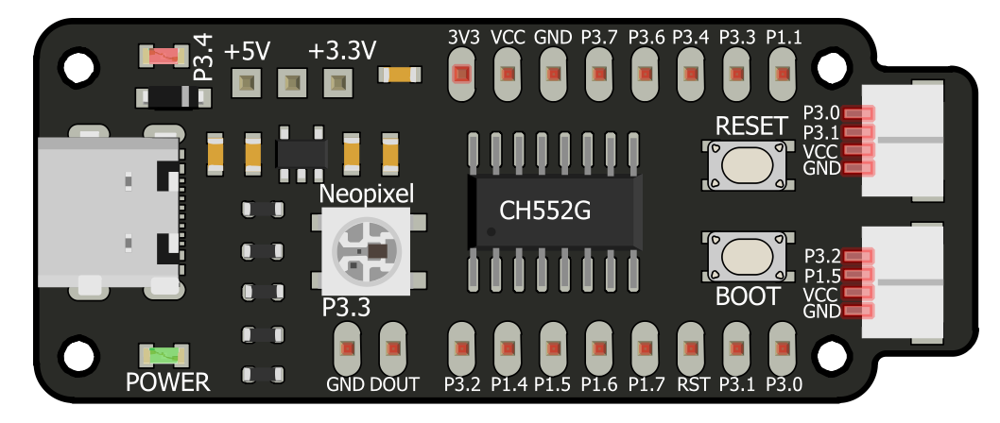

Guía de usuario - Prácticas#
Bienvenido al repositorio de prácticas para la tarjeta de desarrollo CH552G. Este recurso está diseñado para proporcionar un aprendizaje completo y estructurado a aquellos interesados en aprovechar las capacidades de los microcontroladores de bajos recursos, con un enfoque en una amplia gama de aplicaciones prácticas. Cada práctica se centra en aspectos específicos, como la programación de LEDs, el uso de sensores analógicos, aplicaciones en sistemas de monitoreo y la comunicación con pantallas, entre otros.
{kind=link}

Figura 1 Cocket Nova (Imagen de referencia)#
El objetivo de este repositorio es ofrecer un recurso integral que permita a los usuarios explorar y experimentar con diversas funcionalidades de la tarjeta CH552G. A través de ejemplos prácticos y explicaciones detalladas, los usuarios podrán adquirir habilidades valiosas en programación y electrónica, lo que les permitirá desarrollar proyectos innovadores y creativos.
Contenido
- Cocket Nova CH552
- Conector JST SH 1.0mm 4 pines
- SDK Docker CH55x Unit
- Salidas Digitales
- Modulación por ancho de pulso (PWM)
- Entradas digitales
- Entradas Digitales
- Conversión de Analógico a Digital
- I2C (Inter-Integrated Circuit)
- Ejemplo de Integración
- SPI (Interfaz Periférica Serial)
- Interfaz USB
- Control WS2812
- Cómo Generar un Informe de Error